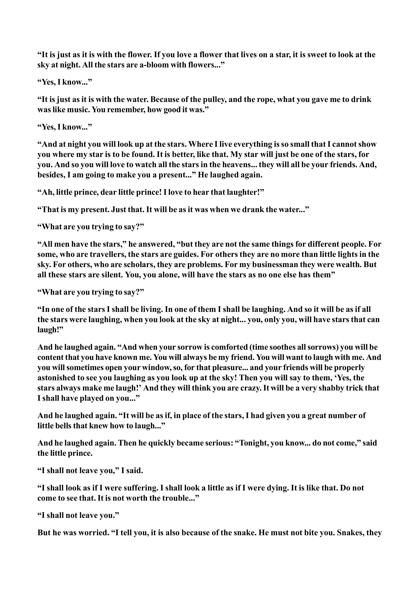

“It is just as it is with the flower. If you love a flower that lives on a star, it is sweet to look at the sky at night. All the stars are a-bloom with flowers...” “Yes, I know...” “It is just as it is with the water. Because of the pulley, and the rope, what you gave me to drink was like music. You remember, how good it was.” “Yes, I know...” “And at night you will look up at the stars. Where I live everything is so small that I cannot show you where my star is to be found. It is better, like that. My star will just be one of the stars, for you. And so you will love to watch all the stars in the heavens... they will all be your friends. And, besides, I am going to make you a present...” He laughed again. “Ah, little prince, dear little prince! I love to hear that laughter!” “That is my present. Just that. It will be as it was when we drank the water...” “What are you trying to say?” “All men have the stars,” he answered, “but they are not the same things for different people. For some, who are travellers, the stars are guides. For others they are no more than little lights in the sky. For others, who are scholars, they are problems. For my businessman they were wealth. But all these stars are silent. You, you alone, will have the stars as no one else has them” “What are you trying to say?” “In one of the stars I shall be living. In one of them I shall be laughing. And so it will be as if all the stars were laughing, when you look at the sky at night... you, only you, will have stars that can laugh!” And he laughed again. “And when your sorrow is comforted (time soothes all sorrows) you will be content that you have known me. You will always be my friend. You will want to laugh with me. And you will sometimes open your window, so, for that pleasure... and your friends will be properly astonished to see you laughing as you look up at the sky! Then you will say to them, ‘Yes, the stars always make me laugh!’ And they will think you are crazy. It will be a very shabby trick that I shall have played on you...” And he laughed again. “It will be as if, in place of the stars, I had given you a great number of little bells that knew how to laugh...” And he laughed again. Then he quickly became serious: “Tonight, you know... do not come,” said the little prince. “I shall not leave you,” I said. “I shall look as if I were suffering. I shall look a little as if I were dying. It is like that. Do not come to see that. It is not worth the trouble...” “I shall not leave you.” But he was worried. “I tell you, it is also because of the snake. He must not bite you. Snakes, they
